Le but principal de ces inscriptions est de stocker les informations essentielles des étudiants dans une
base de données de l'Université afin de facilité la gestion estudiantine dans l'avenir.
Merci d'y insérer des informations correctes car ces dernières vous
suivront tout au long de votre cursus universitaire à l'USTM.
Ce document a pour but d'indiquer à l'étudiant comment exercer son inscription de manière correcte et
optimale. Soyez concentrés et n'hésitez pas à contacter les numéros en bas de l'écran ou de page pour vous
apporter plus amples informations.
BONNE INSCRIPTION !
Comment s'inscrire
Les inscriptions à l'Université des Sciences et Techniques de Masuku se font en ligne. Pour cela, il faut
suivre les étapes suivantes:
Etape 1: Inscription en ligne
Avant de vous inscrire, vous devez faire une inscription en ligne sur le site de l'Université des
Sciences et Techniques de Masuku. Pour cela, cliquez sur le lien suivant: S'inscrire à l'USTM
Après avoir cliqué sur le lien, si les inscriptions ne sont pas ouvertes vous serez redirigé vers la page
ci-dessous.
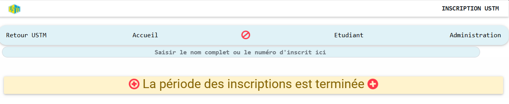
Page d'inscription non disponible
Une fois les inscriptions ouvertes, vous serez redirigé vers cette page où vous devrez cliquer sur
l'onglet Inscription
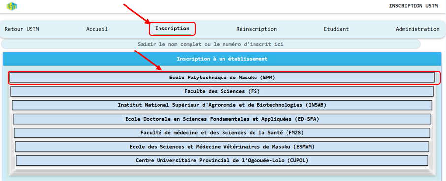
Page d'inscription principale
NB: Pour ce tutoriel, nous avons procédé dans le cas de l'inscription à l'EPM (Ecole
Polytechnique de Masuku).
Etape 1.1: Sélection de l'établissement
Une fois sur la page d'inscription, vous devez sélectionner l'établissement pour lequel vous souhaitez
vous inscrire. Choisissez l'établissement approprié en cliquant dessus.
Etape 1.2: Sélection de la section (Département)
Suite à la sélection de l'établissement, tous les départements de l'Ecole Polytechnique de Masuku sont
alors dévoilés :
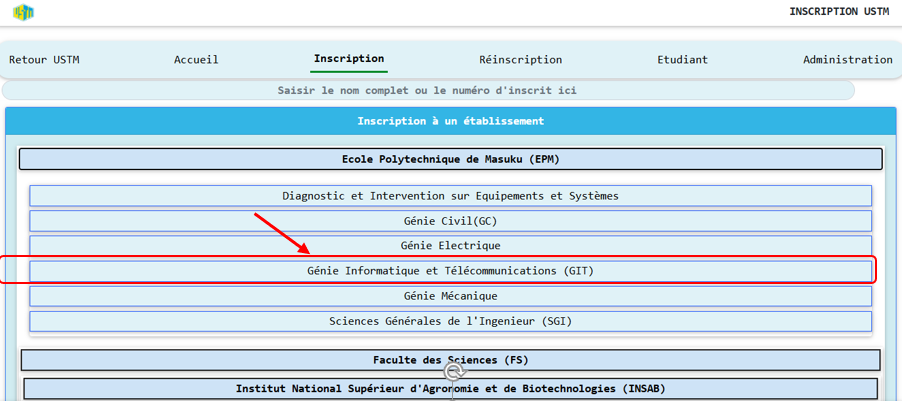
Sélection du département
Vous devez alors choisir le département dans lequel vous souhaitez vous inscrire en cliquant dessus.
Etape 1.3: Sélection du niveau d'étude
Une fois le département choisi, vous devez sélectionner le niveau d'étude pour lequel vous souhaitez vous
inscrire. Choisissez le niveau d'étude approprié en cliquant dessus.
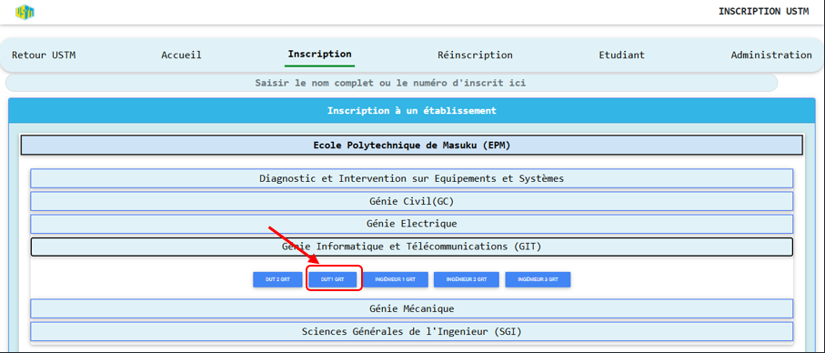
Sélection du niveau d'étude
Une fois terminé, nous passons à l'Etape 2
Etape 2: Remplir le formulaire d'inscription
Une fois les informations d'établissement, de département et de niveau renseignées, vous êtes redirigé
vers le formulaire d'inscription.
Etape 2.1: Téléversement de l'image
Vous devez téléverser une image de vous en cliquant sur l'icône de l'image et en sélectionnant l'image de
votre choix (la taille de l'image ne doit pas dépasser 2Mo).
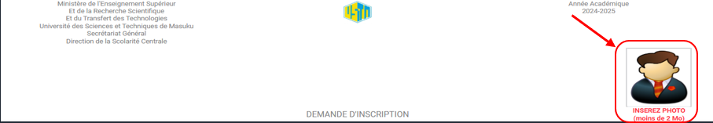
Téléversement de la photo d'identité
Etape 2.2: Renseignement d'un matricule
Deux possibilités vous sont offertes :
Si vous êtes ancien dans l'établissement, cliquez OUI et écrivez votre matricule en un seul mot sans
espaces et continuez de remplir les informations.
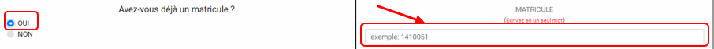
Section pour anciens étudiants
Si vous êtes nouveau dans l'établissement, (même si vous êtes ancien/ancienne à
l'USTM, si vous êtes nouveau/nouvelle dans un établissement) il est évident que vous n'avez
pas de matricule affilié à cet établissement. Donc cliquez NON et continuez de remplir les
informations.
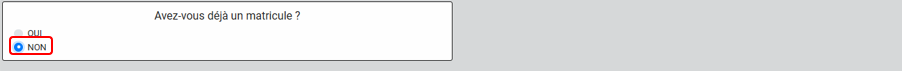
Section pour nouveaux étudiants
Etape 2.3: Identité de l'étudiant
Vous devez renseigner les informations suivantes:
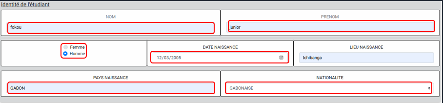
Informations personnelles de l'étudiant
Etape 2.4: Établissement sollicité
Ces informations ont été renseignées plus haut donc laissez comme tel.
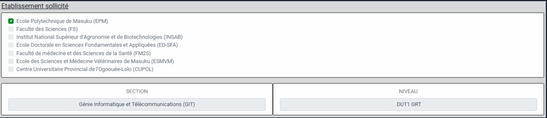
Informations sur l'établissement
Etape 2.5: Informations supplémentaires
Si vous êtes salarié(e), cliquez sur SALARIE.E et écrivez le nom et le prénom de
votre employeur et continuez de remplir les informations.
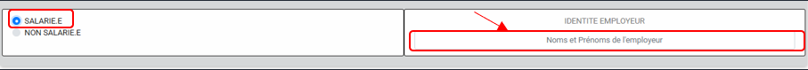
Section pour étudiants salariés
Si vous n'êtes pas salarié(e), cliquez NON SALARIE.E et continuez de remplir les
informations.
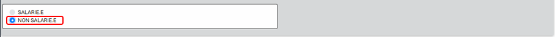
Section pour étudiants non salariés
Si vous résidez au campus, vous cliquez dessus et normalement vous aurez la possibilité d'indiquer le
BATIMENT et le NUMERO DE CHAMBRE.
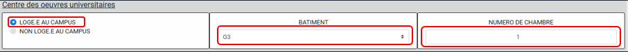
Section logement sur campus
Sinon, cliquez NON LOGE·E AU CAMPUS.
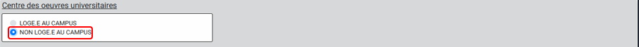
Section non logé sur campus
Si vous êtes boursier(e), renseignez votre numéro de bourse. Sinon laissez le champ vide.
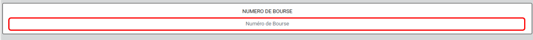
Section bourse étudiante
Même principe pour le mode d'admission à l'USTM : Si vous avez passé le Baccalauréat juste avant
d'arriver à l'université, cliquez sur Baccalauréat (même si vous avez fait le concours de l'INSAB ou de
l'EPM avant le bac).
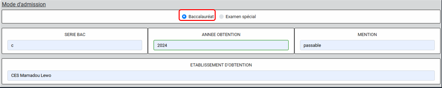
Mode d'admission - Baccalauréat
Sinon, cliquez sur Examen spécial.
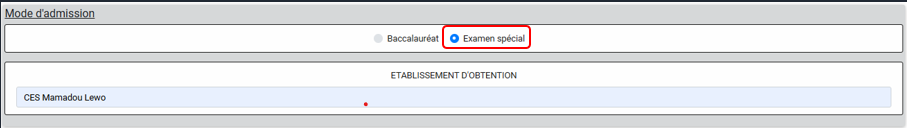
Mode d'admission - Examen spécial
Etape 2.6: Informations complémentaires
Attention !!! les numéros de téléphones doivent être inscrits au format
+241XXXXXXXX
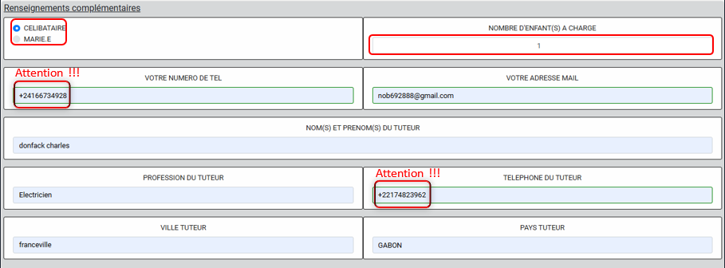
Informations complémentaires
Etape 2.7: Soumission du formulaire
Après avoir pris le temps de remplir soigneusement vos informations, vous devez cocher la déclaration sur
l'honneur (le petit carré vert), qui stipule que toute déclaration fausse entraine l'annulation de votre
inscription. Donc faîtes preuve de responsabilité.
Ensuite vous soumettez vos informations en cliquant sur SOUMETTRE
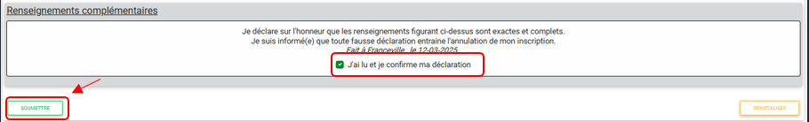
Soumission du formulaire
Après avoir soumis, s'il y a des erreurs (comme un numéro de téléphone avec des lettres par exemple)
elles vous seront indiquées après avoir soumis.
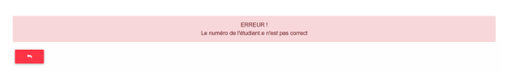
Exemple d'erreur de saisie
Vous devez alors corriger ces erreurs et soumettre à nouveau. Une fois que tout est correct, vous serez
redirigé vers une page de confirmation, vous relisez vos informations au cas où vous aurez omis certains
détails.
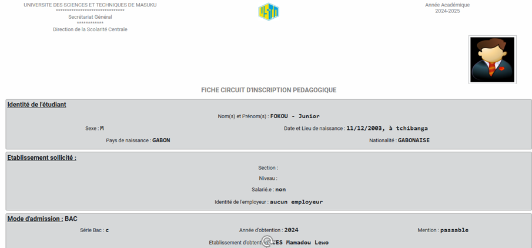
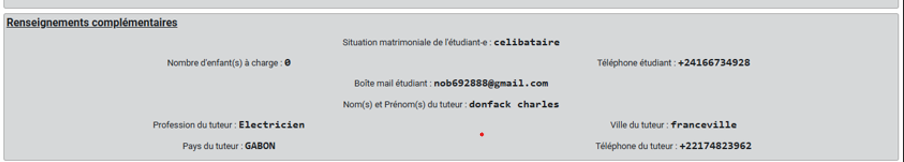
Page de confirmation des informations
Si vous avez oublié quelque chose, vous avez l'opportunité de modifier en cliquant sur MODIFIER ou de valider votre fiche en cliquant sur VALIDER.
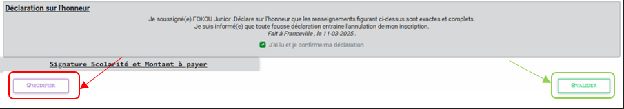
Options de modification/validation
Une fois le formulaire validé, nous vous attribuons un Numéro d'inscrit. Ce
numéro, tout le monde l'aura, que vous ayez un matricule ou pas. Le Numéro permet à l'administration de faire les statistiques pour connaitre le
nombre d'étudiants inscrits à l'université depuis X années.
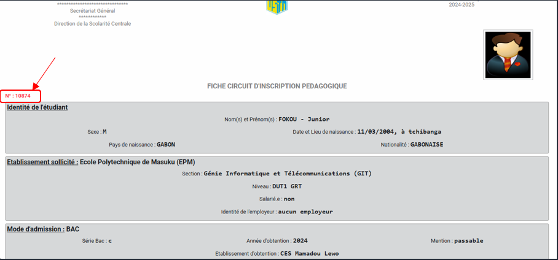
Affichage du numéro d'inscrit
IMPORTANT:
Tout en dessous de la fiche vous aurez un bouton qui se fera remarquer :
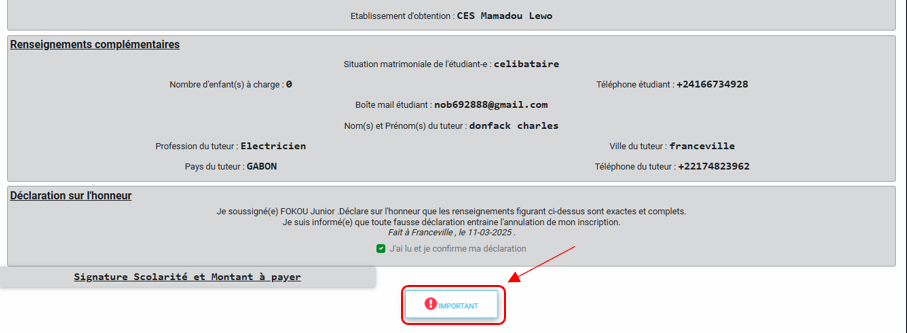
Bouton d'informations importantes
Cliquez dessus ! , il vous donnera des informations importantes à retenir pour la suite de
l'inscription ! Le numéro d'inscrit et le téléphone du tuteur.
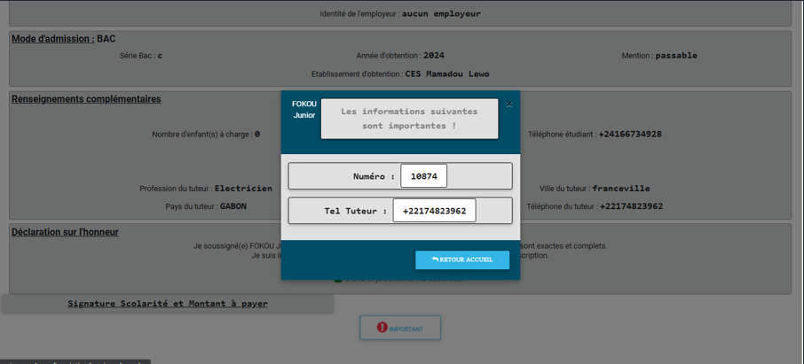
Informations importantes à conserver
Etape 3: Suivi de la fiche
Après avoir validé votre fiche, vous devez suivre votre fiche pour voir si elle a été validée par
l'administration. Une fois vous aurez mémorisé ou fait votre capture d'écran, cliquez sur RETOUR
ACCUEIL
Vous écrivez sur la barre de recherche votre numéro d'inscrit. Ici c'est notre étudiant qui a le numéro
10874. Ensuite automatiquement vous avez l'état du suivi de votre fiche.
A ce niveau nous vous conseillons de vérifier chaque jour votre pour savoir si votre fiche a été
validée ou pas.
En cas de rejet, le motif vous sera donné par votre établissement.
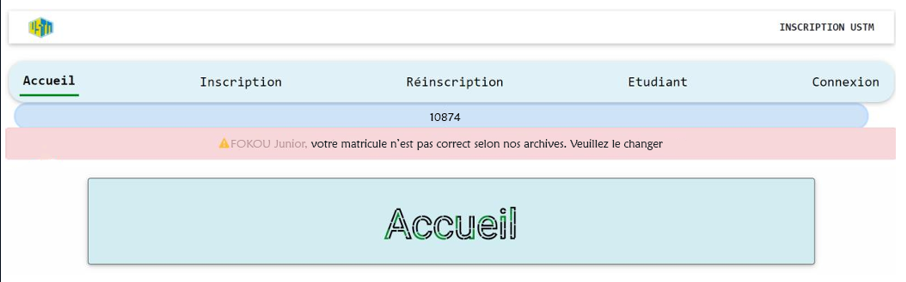
Exemple de fiche rejetée
Si vous voyez cette barre rouge, lisez l'information que l'établissement vous demande.
S'il vous est demandé d'aller au niveau de votre établissement allez-y.
S'il vous est demandé de changer quelques informations de votre fiche (ici dans l'exemple c'est
le matricule), dans ce cas cliquez sur Etudiant
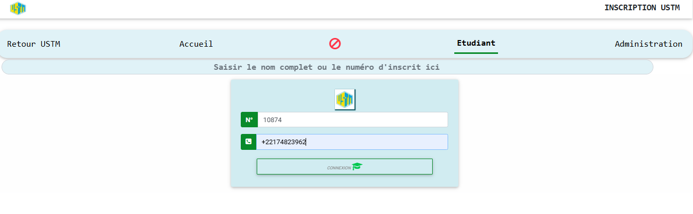
Option pour modifier la fiche
Ensuite vous validez. Vous aurez alors accès à votre espace étudiant personnel. Ici, vous avez
alors la possibilité de changer vos informations rejetées et les soumettre.
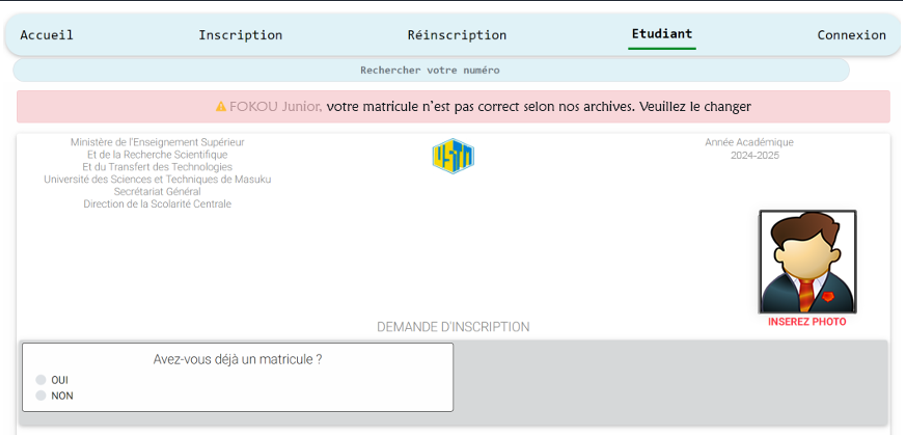
Espace de modification de la fiche
Notre étudiant a alors modifié l'information demandée par l'établissement.
Fiche après modification
Une fois l'opération effectuée, vous aurez cette phrase dans votre espace étudiant.
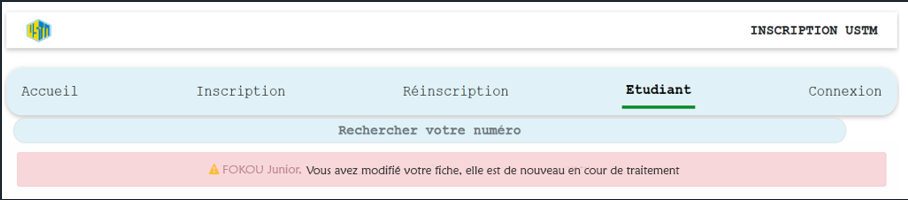
Confirmation de modification
Notre étudiant continue alors sa routine journalière qui est de vérifier si l'établissement a validé
sa fiche d'informations.
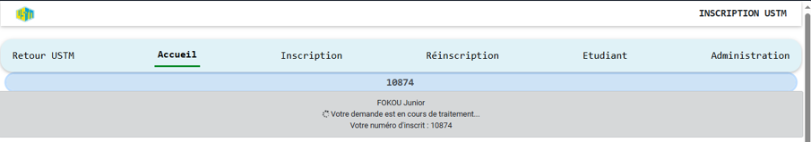
Suivi de l'état de la fiche
Si votre fiche est validée, vous aurez un message de confirmation.
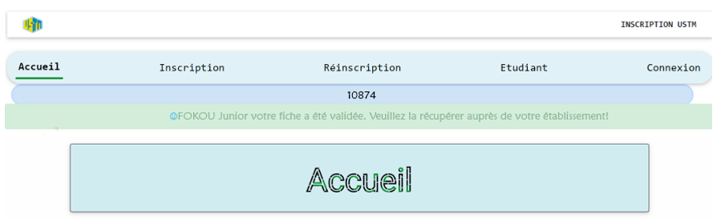
Fiche validée par l'administration
Super ! En vérifiant son numéro d'inscrit, il remarque qu'elle a été validée.
Vous devez, à cette étape, aller physiquement dans votre établissement (ou département, c'est selon)
pour récupérer votre fiche qui aura le cachet de votre établissement. Bravo ! vous disposez désormais
d'une inscription pédagogique validée par votre établissement. Celle-ci vous permettra désormais d'aller
à la scolarité, la présenter afin de payer vos frais d'inscriptions.
Une fois que vous avez payé au niveau de la scolarité, nous vous conseillons
vivement de vérifier immédiatement sur la recherche si vous voyez le message ci-dessous (avec le
fond vert).
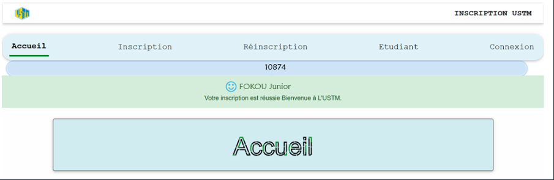
Inscription complètement validée
Si vous voyez ce message, c'est que vous êtes officiellement inscrit(e) à l'USTM. Vous pouvez alors
commencer à suivre les cours.
Etape 4: Paiement des frais d'inscription
Après la validation de votre fiche, vous devez payer les frais d'inscription. Pour cela, vous devez vous
rendre à la banque muni d'une photocopie de votre fiche circuit pour payer les frais d'inscription qui
sont de 35000 XFA. Vous devez payer les frais d'inscription dans un délai de 15 jours
après la validation de votre fiche. Si vous ne payez pas les frais d'inscription dans ce délai, votre
fiche sera annulée et vous devrez recommencer la procédure d'inscription.
Etape 5: Finalisation de l'inscription
Vous pouvez enfin, depuis chez vous, retourner dans votre espace étudiant.
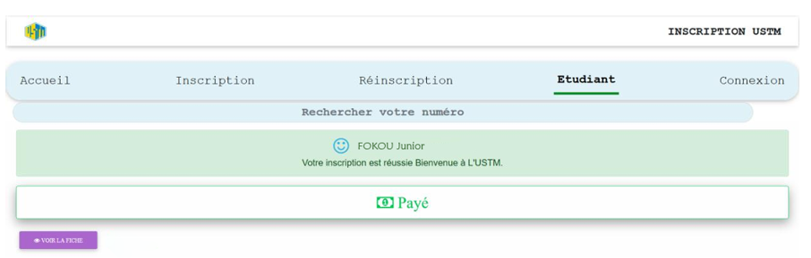
Accès à l'espace étudiant
Vous cliquez sur VOIR LA FICHE pour voir votre nouvelle fiche avec votre mail de l'université.Attention : le mail est généré lors de l'inscription mais il n'est pas pour autant
opérationnel. Il vous faut contacter l'administrateur du site USTM pour l'activer. Ce dernier ne le fera
que sur présentation de votre carte d'étudiant. Vous aurez alors accès à votre fiche
d'inscription. Vous pouvez alors la télécharger et l'imprimer.
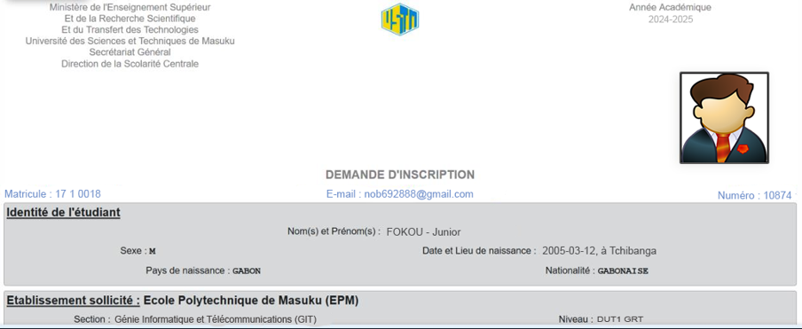
Fiche étudiante complète
Etape 5.1: Validation finale de l'inscription
Après avoir payé les frais d'inscription, vous devez vous rendre au secrétariat pour valider votre
inscription. Vous devez apporter les documents suivants:
Votre fiche circuit
Votre fiche pédagogique
Une copie légalisée de votre acte de naissance
Une copie légalisée de votre attestation de réussite